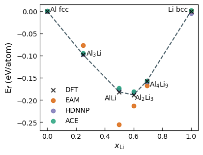

import numpy as np
import matplotlib.pylab as plt
import time
from helper import get_clean_project_name
from pyiron_atomistics import Project
from pyiron_atomistics.atomistics.structure.atoms import ase_to_pyiron, pyiron_to_ase
import pyiron_gpl
import seaborn as sns
import pandas as pd
from pychromatic import Multiplot
from pychromatic.colors import accent
from scipy.optimize import curve_fit
colors = {"g": "#1b9e77", "r": "#d95f02", "b": "#7570b3"}
/home/menon/miniconda3/envs/potentials2023/lib/python3.10/site-packages/numpy/core/getlimits.py:542: UserWarning: Signature b'\x00\xd0\xcc\xcc\xcc\xcc\xcc\xcc\xfb\xbf\x00\x00\x00\x00\x00\x00' for <class 'numpy.longdouble'> does not match any known type: falling back to type probe function.
This warnings indicates broken support for the dtype!
machar = _get_machar(dtype)
def birch_murnaghan(vol, V0, E0, B0, Bp):
eta = (vol/V0)**(1.0/3.0)
E = E0 + 9.0*B0*V0/16.0 * (eta**2-1.0)**2 * (6.0 + Bp*(eta**2-1.0) - 4.0*eta**2)
return E
def fit_bm(vol, en):
a, b, c = np.polyfit(vol, en, 2)
V0 = -b/(2*a)
E0 = a*V0**2 + b*V0 + c
B0 = 2*a*V0
Bp = 4.0
popt, pcov = curve_fit(birch_murnaghan, vol, en, p0=[V0, E0, B0, Bp])
return popt
pr = Project("validation_LiAl2")
table = pr.load('table_murn')
data_murn = table.get_dataframe()
df_dft_ref = pd.read_pickle("dft_ref_2.pckl")
def get_en_vol(pot, compound, crystal_structure, points=False):
df = data_murn.loc[(data_murn.potential==pot) & (data_murn.compound==compound) & (data_murn.crystal_structure==crystal_structure)]
#print(df.job_id)
murn_job = pr.load(df.job_id.values[0])
murn_df = murn_job.output_to_pandas()
vol = murn_df["volume"]/len(murn_job.get_structure())
en = murn_df["energy"]/len(murn_job.get_structure())
popt = fit_bm(vol, en)
volfit = np.linspace(min(vol), max(vol), 10000)
enfit = birch_murnaghan(volfit, popt[0], popt[1], popt[2], popt[3])
return volfit, enfit
def get_en_vol_dft(compound):
df1 = df_dft_ref[df_dft_ref["compound"]==compound]
vol = df1["volume"]
en = df1["energy_per_atom"]
popt = fit_bm(vol, en)
volfit = np.linspace(min(vol), max(vol), 10000)
enfit = birch_murnaghan(volfit, popt[0], popt[1], popt[2], popt[3])
return volfit, enfit
Normal EV curves#
mlt = Multiplot(columns=3, width=700, ratio=0.3, wspace=0.3)
eam_vol, eam_en = get_en_vol('AlLi_eam', "Al", "fcc")
hdn_vol, hdn_en = get_en_vol('AlLi_hdnnp', "Al", "fcc")
ace_vol, ace_en = get_en_vol('AlLi_ace', "Al", "fcc")
dft_vol, dft_en = get_en_vol_dft("Al_fcc")
mlt[0,0].plot(dft_vol, dft_en, c='black', lw=2, label="DFT", zorder=10)
mlt[0,0].plot(eam_vol, eam_en, c=colors["r"], lw=2, label="EAM")
mlt[0,0].plot(hdn_vol, hdn_en, c=colors["b"], lw=2, label="HDNNP")
mlt[0,0].plot(ace_vol, ace_en, c=colors["g"], lw=2, label="ACE")
eam_vol, eam_en = get_en_vol('AlLi_eam', "Li", "bcc")
hdn_vol, hdn_en = get_en_vol('AlLi_hdnnp', "Li", "bcc")
ace_vol, ace_en = get_en_vol('AlLi_ace', "Li", "bcc")
dft_vol, dft_en = get_en_vol_dft("Li_bcc")
mlt[0,1].plot(dft_vol, dft_en, c='black', lw=2, label="BCC", zorder=10)
mlt[0,1].plot(eam_vol, eam_en, c=colors["r"], lw=2)
mlt[0,1].plot(hdn_vol, hdn_en, c=colors["b"], lw=2)
mlt[0,1].plot(ace_vol, ace_en, c=colors["g"], lw=2)
eam_vol, eam_en = get_en_vol('AlLi_eam', "Li", "fcc")
hdn_vol, hdn_en = get_en_vol('AlLi_hdnnp', "Li", "fcc")
ace_vol, ace_en = get_en_vol('AlLi_ace', "Li", "fcc")
dft_vol, dft_en = get_en_vol_dft("Li_fcc")
mlt[0,1].plot(dft_vol, dft_en, c='black', lw=2, label="FCC", zorder=10, ls='dashed')
mlt[0,1].plot(eam_vol, eam_en, c=colors["r"], lw=2, ls='dashed')
mlt[0,1].plot(hdn_vol, hdn_en, c=colors["b"], lw=2, ls='dashed')
mlt[0,1].plot(ace_vol, ace_en, c=colors["g"], lw=2, ls='dashed')
eam_vol, eam_en = get_en_vol('AlLi_eam', "Li2Al2", "cubic")
hdn_vol, hdn_en = get_en_vol('AlLi_hdnnp', "Li2Al2", "cubic")
ace_vol, ace_en = get_en_vol('AlLi_ace', "Li2Al2", "cubic")
dft_vol, dft_en = get_en_vol_dft("LiAl_mp-1067")
mlt[0,2].plot(dft_vol, dft_en, c='black', lw=2, zorder=10)
mlt[0,2].plot(eam_vol, eam_en, c=colors["r"], lw=2)
mlt[0,2].plot(hdn_vol, hdn_en, c=colors["b"], lw=2)
mlt[0,2].plot(ace_vol, ace_en, c=colors["g"], lw=2)
plt.text(min(dft_vol), min(dft_en)-0.05, r"AlLi")
eam_vol, eam_en = get_en_vol('AlLi_eam', "LiAl3", "cubic")
hdn_vol, hdn_en = get_en_vol('AlLi_hdnnp', "LiAl3", "cubic")
ace_vol, ace_en = get_en_vol('AlLi_ace', "LiAl3", "cubic")
dft_vol, dft_en = get_en_vol_dft("LiAl3_mp-10890")
mlt[0,2].plot(dft_vol, dft_en, c='black', lw=2, zorder=10, ls='dashed')
mlt[0,2].plot(eam_vol, eam_en, c=colors["r"], lw=2, ls='dashed')
mlt[0,2].plot(hdn_vol, hdn_en, c=colors["b"], lw=2, ls='dashed')
mlt[0,2].plot(ace_vol, ace_en, c=colors["g"], lw=2, ls='dashed')
plt.text(min(dft_vol), min(dft_en)+0.05, r"$\mathrm{AlLi}_3$")
eam_vol, eam_en = get_en_vol('AlLi_eam', "Li9Al4", "monoclinic")
hdn_vol, hdn_en = get_en_vol('AlLi_hdnnp', "Li9Al4", "monoclinic")
ace_vol, ace_en = get_en_vol('AlLi_ace', "Li9Al4", "monoclinic")
dft_vol, dft_en = get_en_vol_dft("Li9Al4_mp-568404")
mlt[0,2].plot(dft_vol, dft_en, c='black', lw=2, zorder=10, ls='dashdot')
mlt[0,2].plot(eam_vol, eam_en, c=colors["r"], lw=2, ls='dashdot')
mlt[0,2].plot(hdn_vol, hdn_en, c=colors["b"], lw=2, ls='dashdot')
mlt[0,2].plot(ace_vol, ace_en, c=colors["g"], lw=2, ls='dashdot')
plt.text(min(dft_vol), min(dft_en)-0.05, r"$\mathrm{Al_4Li_9}$")
eam_vol, eam_en = get_en_vol('AlLi_eam', "Li3Al2", "trigonal")
hdn_vol, hdn_en = get_en_vol('AlLi_hdnnp', "Li3Al2", "trigonal")
ace_vol, ace_en = get_en_vol('AlLi_ace', "Li3Al2", "trigonal")
dft_vol, dft_en = get_en_vol_dft("Li3Al2_mp-16506")
mlt[0,2].plot(dft_vol, dft_en, c='black', lw=2, zorder=10, ls='dotted')
mlt[0,2].plot(eam_vol, eam_en, c=colors["r"], lw=2, ls='dotted')
mlt[0,2].plot(hdn_vol, hdn_en, c=colors["b"], lw=2, ls='dotted')
mlt[0,2].plot(ace_vol, ace_en, c=colors["g"], lw=2, ls='dotted')
plt.text(min(dft_vol), min(dft_en)-0.05, r"$\mathrm{Al_2Li_3}$")
mlt[0,0].legend(frameon=False)
mlt[0,1].legend(frameon=False)
mlt[0,2].legend(frameon=False, bbox_to_anchor=[1.45, 0.5])
mlt[0,0].set_xlabel(r"Volume ($\mathrm{\AA}^3/$atom)", fontsize=12)
mlt[0,1].set_xlabel(r"Volume ($\mathrm{\AA}^3/$atom)", fontsize=12)
mlt[0,2].set_xlabel(r"Volume ($\mathrm{\AA}^3/$atom)", fontsize=12)
mlt[0,0].set_ylabel(r"Energy (eV/atom)")
mlt[0,0].set_title(r"(a)", loc='left', fontsize=12)
mlt[0,1].set_title(r"(b)", loc='left', fontsize=12)
mlt[0,2].set_title(r"(c)", loc='left', fontsize=12)
mlt[0,1].set_ylim(-1.7625, -1.7425)
plt.savefig("img_ev_curve.png", dpi=300, bbox_inches='tight')
2023-12-08 10:47:06,126 - pyiron_log - DEBUG - sql_query: {'job': 'murn_job_Al_fcc', 'project': '/mnt/c/Users/menon/Documents/winrepos/projects-workshops/potentials-workshop-2022/validation/validation_LiAl2/AlLi_eam/'}
2023-12-08 10:47:06,128 - pyiron_log - DEBUG - sql_query: {'job': 'murn_job_Al_fcc', 'project': '/mnt/c/Users/menon/Documents/winrepos/projects-workshops/potentials-workshop-2022/validation/validation_LiAl2/AlLi_eam/'}
2023-12-08 10:47:06,134 - pyiron_log - DEBUG - sql_query: {'job': 'murn_job_Al_fcc', 'project': '/mnt/c/Users/menon/Documents/winrepos/projects-workshops/potentials-workshop-2022/validation/validation_LiAl2/AlLi_eam/'}
2023-12-08 10:47:06,135 - pyiron_log - DEBUG - sql_query: {'job': 'murn_job_Al_fcc', 'project': '/mnt/c/Users/menon/Documents/winrepos/projects-workshops/potentials-workshop-2022/validation/validation_LiAl2/AlLi_eam/'}
2023-12-08 10:47:06,143 - pyiron_log - DEBUG - Not supported parameter used!
2023-12-08 10:47:06,144 - pyiron_log - DEBUG - sql_query: {'job': 'murn_job_Al_fcc', 'project': '/mnt/c/Users/menon/Documents/winrepos/projects-workshops/potentials-workshop-2022/validation/validation_LiAl2/AlLi_eam/'}
2023-12-08 10:47:06,146 - pyiron_log - DEBUG - sql_query: {'job': 'murn_job_Al_fcc', 'project': '/mnt/c/Users/menon/Documents/winrepos/projects-workshops/potentials-workshop-2022/validation/validation_LiAl2/AlLi_eam/'}
2023-12-08 10:47:06,153 - pyiron_log - DEBUG - Not supported parameter used!
2023-12-08 10:47:06,377 - pyiron_log - DEBUG - sql_query: {'job': 'murn_job_Al_fcc', 'project': '/mnt/c/Users/menon/Documents/winrepos/projects-workshops/potentials-workshop-2022/validation/validation_LiAl2/AlLi_hdnnp/'}
2023-12-08 10:47:06,379 - pyiron_log - DEBUG - sql_query: {'job': 'murn_job_Al_fcc', 'project': '/mnt/c/Users/menon/Documents/winrepos/projects-workshops/potentials-workshop-2022/validation/validation_LiAl2/AlLi_hdnnp/'}
2023-12-08 10:47:06,384 - pyiron_log - DEBUG - sql_query: {'job': 'murn_job_Al_fcc', 'project': '/mnt/c/Users/menon/Documents/winrepos/projects-workshops/potentials-workshop-2022/validation/validation_LiAl2/AlLi_hdnnp/'}
2023-12-08 10:47:06,386 - pyiron_log - DEBUG - sql_query: {'job': 'murn_job_Al_fcc', 'project': '/mnt/c/Users/menon/Documents/winrepos/projects-workshops/potentials-workshop-2022/validation/validation_LiAl2/AlLi_hdnnp/'}
2023-12-08 10:47:06,396 - pyiron_log - DEBUG - Not supported parameter used!
2023-12-08 10:47:06,397 - pyiron_log - DEBUG - sql_query: {'job': 'murn_job_Al_fcc', 'project': '/mnt/c/Users/menon/Documents/winrepos/projects-workshops/potentials-workshop-2022/validation/validation_LiAl2/AlLi_hdnnp/'}
2023-12-08 10:47:06,401 - pyiron_log - DEBUG - sql_query: {'job': 'murn_job_Al_fcc', 'project': '/mnt/c/Users/menon/Documents/winrepos/projects-workshops/potentials-workshop-2022/validation/validation_LiAl2/AlLi_hdnnp/'}
2023-12-08 10:47:06,407 - pyiron_log - DEBUG - Not supported parameter used!
2023-12-08 10:47:06,618 - pyiron_log - DEBUG - sql_query: {'job': 'murn_job_Al_fcc', 'project': '/mnt/c/Users/menon/Documents/winrepos/projects-workshops/potentials-workshop-2022/validation/validation_LiAl2/AlLi_ace/'}
2023-12-08 10:47:06,621 - pyiron_log - DEBUG - sql_query: {'job': 'murn_job_Al_fcc', 'project': '/mnt/c/Users/menon/Documents/winrepos/projects-workshops/potentials-workshop-2022/validation/validation_LiAl2/AlLi_ace/'}
2023-12-08 10:47:06,624 - pyiron_log - DEBUG - sql_query: {'job': 'murn_job_Al_fcc', 'project': '/mnt/c/Users/menon/Documents/winrepos/projects-workshops/potentials-workshop-2022/validation/validation_LiAl2/AlLi_ace/'}
2023-12-08 10:47:06,626 - pyiron_log - DEBUG - sql_query: {'job': 'murn_job_Al_fcc', 'project': '/mnt/c/Users/menon/Documents/winrepos/projects-workshops/potentials-workshop-2022/validation/validation_LiAl2/AlLi_ace/'}
2023-12-08 10:47:06,632 - pyiron_log - DEBUG - Not supported parameter used!
2023-12-08 10:47:06,633 - pyiron_log - DEBUG - sql_query: {'job': 'murn_job_Al_fcc', 'project': '/mnt/c/Users/menon/Documents/winrepos/projects-workshops/potentials-workshop-2022/validation/validation_LiAl2/AlLi_ace/'}
2023-12-08 10:47:06,635 - pyiron_log - DEBUG - sql_query: {'job': 'murn_job_Al_fcc', 'project': '/mnt/c/Users/menon/Documents/winrepos/projects-workshops/potentials-workshop-2022/validation/validation_LiAl2/AlLi_ace/'}
2023-12-08 10:47:06,641 - pyiron_log - DEBUG - Not supported parameter used!
2023-12-08 10:47:07,234 - pyiron_log - DEBUG - sql_query: {'job': 'murn_job_Li_bcc', 'project': '/mnt/c/Users/menon/Documents/winrepos/projects-workshops/potentials-workshop-2022/validation/validation_LiAl2/AlLi_eam/'}
2023-12-08 10:47:07,237 - pyiron_log - DEBUG - sql_query: {'job': 'murn_job_Li_bcc', 'project': '/mnt/c/Users/menon/Documents/winrepos/projects-workshops/potentials-workshop-2022/validation/validation_LiAl2/AlLi_eam/'}
2023-12-08 10:47:07,242 - pyiron_log - DEBUG - sql_query: {'job': 'murn_job_Li_bcc', 'project': '/mnt/c/Users/menon/Documents/winrepos/projects-workshops/potentials-workshop-2022/validation/validation_LiAl2/AlLi_eam/'}
2023-12-08 10:47:07,243 - pyiron_log - DEBUG - sql_query: {'job': 'murn_job_Li_bcc', 'project': '/mnt/c/Users/menon/Documents/winrepos/projects-workshops/potentials-workshop-2022/validation/validation_LiAl2/AlLi_eam/'}
2023-12-08 10:47:07,249 - pyiron_log - DEBUG - Not supported parameter used!
2023-12-08 10:47:07,250 - pyiron_log - DEBUG - sql_query: {'job': 'murn_job_Li_bcc', 'project': '/mnt/c/Users/menon/Documents/winrepos/projects-workshops/potentials-workshop-2022/validation/validation_LiAl2/AlLi_eam/'}
2023-12-08 10:47:07,255 - pyiron_log - DEBUG - sql_query: {'job': 'murn_job_Li_bcc', 'project': '/mnt/c/Users/menon/Documents/winrepos/projects-workshops/potentials-workshop-2022/validation/validation_LiAl2/AlLi_eam/'}
2023-12-08 10:47:07,262 - pyiron_log - DEBUG - Not supported parameter used!
2023-12-08 10:47:07,498 - pyiron_log - DEBUG - sql_query: {'job': 'murn_job_Li_bcc', 'project': '/mnt/c/Users/menon/Documents/winrepos/projects-workshops/potentials-workshop-2022/validation/validation_LiAl2/AlLi_hdnnp/'}
2023-12-08 10:47:07,500 - pyiron_log - DEBUG - sql_query: {'job': 'murn_job_Li_bcc', 'project': '/mnt/c/Users/menon/Documents/winrepos/projects-workshops/potentials-workshop-2022/validation/validation_LiAl2/AlLi_hdnnp/'}
2023-12-08 10:47:07,505 - pyiron_log - DEBUG - sql_query: {'job': 'murn_job_Li_bcc', 'project': '/mnt/c/Users/menon/Documents/winrepos/projects-workshops/potentials-workshop-2022/validation/validation_LiAl2/AlLi_hdnnp/'}
2023-12-08 10:47:07,507 - pyiron_log - DEBUG - sql_query: {'job': 'murn_job_Li_bcc', 'project': '/mnt/c/Users/menon/Documents/winrepos/projects-workshops/potentials-workshop-2022/validation/validation_LiAl2/AlLi_hdnnp/'}
2023-12-08 10:47:07,513 - pyiron_log - DEBUG - Not supported parameter used!
2023-12-08 10:47:07,515 - pyiron_log - DEBUG - sql_query: {'job': 'murn_job_Li_bcc', 'project': '/mnt/c/Users/menon/Documents/winrepos/projects-workshops/potentials-workshop-2022/validation/validation_LiAl2/AlLi_hdnnp/'}
2023-12-08 10:47:07,519 - pyiron_log - DEBUG - sql_query: {'job': 'murn_job_Li_bcc', 'project': '/mnt/c/Users/menon/Documents/winrepos/projects-workshops/potentials-workshop-2022/validation/validation_LiAl2/AlLi_hdnnp/'}
2023-12-08 10:47:07,527 - pyiron_log - DEBUG - Not supported parameter used!
2023-12-08 10:47:07,754 - pyiron_log - DEBUG - sql_query: {'job': 'murn_job_Li_bcc', 'project': '/mnt/c/Users/menon/Documents/winrepos/projects-workshops/potentials-workshop-2022/validation/validation_LiAl2/AlLi_ace/'}
2023-12-08 10:47:07,757 - pyiron_log - DEBUG - sql_query: {'job': 'murn_job_Li_bcc', 'project': '/mnt/c/Users/menon/Documents/winrepos/projects-workshops/potentials-workshop-2022/validation/validation_LiAl2/AlLi_ace/'}
2023-12-08 10:47:07,765 - pyiron_log - DEBUG - sql_query: {'job': 'murn_job_Li_bcc', 'project': '/mnt/c/Users/menon/Documents/winrepos/projects-workshops/potentials-workshop-2022/validation/validation_LiAl2/AlLi_ace/'}
2023-12-08 10:47:07,768 - pyiron_log - DEBUG - sql_query: {'job': 'murn_job_Li_bcc', 'project': '/mnt/c/Users/menon/Documents/winrepos/projects-workshops/potentials-workshop-2022/validation/validation_LiAl2/AlLi_ace/'}
2023-12-08 10:47:07,775 - pyiron_log - DEBUG - Not supported parameter used!
2023-12-08 10:47:07,776 - pyiron_log - DEBUG - sql_query: {'job': 'murn_job_Li_bcc', 'project': '/mnt/c/Users/menon/Documents/winrepos/projects-workshops/potentials-workshop-2022/validation/validation_LiAl2/AlLi_ace/'}
2023-12-08 10:47:07,779 - pyiron_log - DEBUG - sql_query: {'job': 'murn_job_Li_bcc', 'project': '/mnt/c/Users/menon/Documents/winrepos/projects-workshops/potentials-workshop-2022/validation/validation_LiAl2/AlLi_ace/'}
2023-12-08 10:47:07,785 - pyiron_log - DEBUG - Not supported parameter used!
2023-12-08 10:47:08,044 - pyiron_log - DEBUG - sql_query: {'job': 'murn_job_Li_fcc', 'project': '/mnt/c/Users/menon/Documents/winrepos/projects-workshops/potentials-workshop-2022/validation/validation_LiAl2/AlLi_eam/'}
2023-12-08 10:47:08,047 - pyiron_log - DEBUG - sql_query: {'job': 'murn_job_Li_fcc', 'project': '/mnt/c/Users/menon/Documents/winrepos/projects-workshops/potentials-workshop-2022/validation/validation_LiAl2/AlLi_eam/'}
2023-12-08 10:47:08,052 - pyiron_log - DEBUG - sql_query: {'job': 'murn_job_Li_fcc', 'project': '/mnt/c/Users/menon/Documents/winrepos/projects-workshops/potentials-workshop-2022/validation/validation_LiAl2/AlLi_eam/'}
2023-12-08 10:47:08,053 - pyiron_log - DEBUG - sql_query: {'job': 'murn_job_Li_fcc', 'project': '/mnt/c/Users/menon/Documents/winrepos/projects-workshops/potentials-workshop-2022/validation/validation_LiAl2/AlLi_eam/'}
2023-12-08 10:47:08,059 - pyiron_log - DEBUG - Not supported parameter used!
2023-12-08 10:47:08,061 - pyiron_log - DEBUG - sql_query: {'job': 'murn_job_Li_fcc', 'project': '/mnt/c/Users/menon/Documents/winrepos/projects-workshops/potentials-workshop-2022/validation/validation_LiAl2/AlLi_eam/'}
2023-12-08 10:47:08,063 - pyiron_log - DEBUG - sql_query: {'job': 'murn_job_Li_fcc', 'project': '/mnt/c/Users/menon/Documents/winrepos/projects-workshops/potentials-workshop-2022/validation/validation_LiAl2/AlLi_eam/'}
2023-12-08 10:47:08,070 - pyiron_log - DEBUG - Not supported parameter used!
2023-12-08 10:47:08,303 - pyiron_log - DEBUG - sql_query: {'job': 'murn_job_Li_fcc', 'project': '/mnt/c/Users/menon/Documents/winrepos/projects-workshops/potentials-workshop-2022/validation/validation_LiAl2/AlLi_hdnnp/'}
2023-12-08 10:47:08,304 - pyiron_log - DEBUG - sql_query: {'job': 'murn_job_Li_fcc', 'project': '/mnt/c/Users/menon/Documents/winrepos/projects-workshops/potentials-workshop-2022/validation/validation_LiAl2/AlLi_hdnnp/'}
2023-12-08 10:47:08,309 - pyiron_log - DEBUG - sql_query: {'job': 'murn_job_Li_fcc', 'project': '/mnt/c/Users/menon/Documents/winrepos/projects-workshops/potentials-workshop-2022/validation/validation_LiAl2/AlLi_hdnnp/'}
2023-12-08 10:47:08,310 - pyiron_log - DEBUG - sql_query: {'job': 'murn_job_Li_fcc', 'project': '/mnt/c/Users/menon/Documents/winrepos/projects-workshops/potentials-workshop-2022/validation/validation_LiAl2/AlLi_hdnnp/'}
2023-12-08 10:47:08,316 - pyiron_log - DEBUG - Not supported parameter used!
2023-12-08 10:47:08,317 - pyiron_log - DEBUG - sql_query: {'job': 'murn_job_Li_fcc', 'project': '/mnt/c/Users/menon/Documents/winrepos/projects-workshops/potentials-workshop-2022/validation/validation_LiAl2/AlLi_hdnnp/'}
2023-12-08 10:47:08,319 - pyiron_log - DEBUG - sql_query: {'job': 'murn_job_Li_fcc', 'project': '/mnt/c/Users/menon/Documents/winrepos/projects-workshops/potentials-workshop-2022/validation/validation_LiAl2/AlLi_hdnnp/'}
2023-12-08 10:47:08,332 - pyiron_log - DEBUG - Not supported parameter used!
2023-12-08 10:47:08,537 - pyiron_log - DEBUG - sql_query: {'job': 'murn_job_Li_fcc', 'project': '/mnt/c/Users/menon/Documents/winrepos/projects-workshops/potentials-workshop-2022/validation/validation_LiAl2/AlLi_ace/'}
2023-12-08 10:47:08,539 - pyiron_log - DEBUG - sql_query: {'job': 'murn_job_Li_fcc', 'project': '/mnt/c/Users/menon/Documents/winrepos/projects-workshops/potentials-workshop-2022/validation/validation_LiAl2/AlLi_ace/'}
2023-12-08 10:47:08,544 - pyiron_log - DEBUG - sql_query: {'job': 'murn_job_Li_fcc', 'project': '/mnt/c/Users/menon/Documents/winrepos/projects-workshops/potentials-workshop-2022/validation/validation_LiAl2/AlLi_ace/'}
2023-12-08 10:47:08,546 - pyiron_log - DEBUG - sql_query: {'job': 'murn_job_Li_fcc', 'project': '/mnt/c/Users/menon/Documents/winrepos/projects-workshops/potentials-workshop-2022/validation/validation_LiAl2/AlLi_ace/'}
2023-12-08 10:47:08,551 - pyiron_log - DEBUG - Not supported parameter used!
2023-12-08 10:47:08,553 - pyiron_log - DEBUG - sql_query: {'job': 'murn_job_Li_fcc', 'project': '/mnt/c/Users/menon/Documents/winrepos/projects-workshops/potentials-workshop-2022/validation/validation_LiAl2/AlLi_ace/'}
2023-12-08 10:47:08,560 - pyiron_log - DEBUG - sql_query: {'job': 'murn_job_Li_fcc', 'project': '/mnt/c/Users/menon/Documents/winrepos/projects-workshops/potentials-workshop-2022/validation/validation_LiAl2/AlLi_ace/'}
2023-12-08 10:47:08,567 - pyiron_log - DEBUG - Not supported parameter used!
2023-12-08 10:47:08,825 - pyiron_log - DEBUG - sql_query: {'job': 'murn_job_Li2Al2_Li2Al2_cubic', 'project': '/mnt/c/Users/menon/Documents/winrepos/projects-workshops/potentials-workshop-2022/validation/validation_LiAl2/AlLi_eam/'}
2023-12-08 10:47:08,827 - pyiron_log - DEBUG - sql_query: {'job': 'murn_job_Li2Al2_Li2Al2_cubic', 'project': '/mnt/c/Users/menon/Documents/winrepos/projects-workshops/potentials-workshop-2022/validation/validation_LiAl2/AlLi_eam/'}
2023-12-08 10:47:08,831 - pyiron_log - DEBUG - sql_query: {'job': 'murn_job_Li2Al2_Li2Al2_cubic', 'project': '/mnt/c/Users/menon/Documents/winrepos/projects-workshops/potentials-workshop-2022/validation/validation_LiAl2/AlLi_eam/'}
2023-12-08 10:47:08,832 - pyiron_log - DEBUG - sql_query: {'job': 'murn_job_Li2Al2_Li2Al2_cubic', 'project': '/mnt/c/Users/menon/Documents/winrepos/projects-workshops/potentials-workshop-2022/validation/validation_LiAl2/AlLi_eam/'}
2023-12-08 10:47:08,839 - pyiron_log - DEBUG - Not supported parameter used!
2023-12-08 10:47:08,840 - pyiron_log - DEBUG - sql_query: {'job': 'murn_job_Li2Al2_Li2Al2_cubic', 'project': '/mnt/c/Users/menon/Documents/winrepos/projects-workshops/potentials-workshop-2022/validation/validation_LiAl2/AlLi_eam/'}
2023-12-08 10:47:08,843 - pyiron_log - DEBUG - sql_query: {'job': 'murn_job_Li2Al2_Li2Al2_cubic', 'project': '/mnt/c/Users/menon/Documents/winrepos/projects-workshops/potentials-workshop-2022/validation/validation_LiAl2/AlLi_eam/'}
2023-12-08 10:47:08,849 - pyiron_log - DEBUG - Not supported parameter used!
2023-12-08 10:47:09,073 - pyiron_log - DEBUG - sql_query: {'job': 'murn_job_Li2Al2_Li2Al2_cubic', 'project': '/mnt/c/Users/menon/Documents/winrepos/projects-workshops/potentials-workshop-2022/validation/validation_LiAl2/AlLi_hdnnp/'}
2023-12-08 10:47:09,075 - pyiron_log - DEBUG - sql_query: {'job': 'murn_job_Li2Al2_Li2Al2_cubic', 'project': '/mnt/c/Users/menon/Documents/winrepos/projects-workshops/potentials-workshop-2022/validation/validation_LiAl2/AlLi_hdnnp/'}
2023-12-08 10:47:09,079 - pyiron_log - DEBUG - sql_query: {'job': 'murn_job_Li2Al2_Li2Al2_cubic', 'project': '/mnt/c/Users/menon/Documents/winrepos/projects-workshops/potentials-workshop-2022/validation/validation_LiAl2/AlLi_hdnnp/'}
2023-12-08 10:47:09,081 - pyiron_log - DEBUG - sql_query: {'job': 'murn_job_Li2Al2_Li2Al2_cubic', 'project': '/mnt/c/Users/menon/Documents/winrepos/projects-workshops/potentials-workshop-2022/validation/validation_LiAl2/AlLi_hdnnp/'}
2023-12-08 10:47:09,087 - pyiron_log - DEBUG - Not supported parameter used!
2023-12-08 10:47:09,089 - pyiron_log - DEBUG - sql_query: {'job': 'murn_job_Li2Al2_Li2Al2_cubic', 'project': '/mnt/c/Users/menon/Documents/winrepos/projects-workshops/potentials-workshop-2022/validation/validation_LiAl2/AlLi_hdnnp/'}
2023-12-08 10:47:09,091 - pyiron_log - DEBUG - sql_query: {'job': 'murn_job_Li2Al2_Li2Al2_cubic', 'project': '/mnt/c/Users/menon/Documents/winrepos/projects-workshops/potentials-workshop-2022/validation/validation_LiAl2/AlLi_hdnnp/'}
2023-12-08 10:47:09,103 - pyiron_log - DEBUG - Not supported parameter used!
2023-12-08 10:47:09,342 - pyiron_log - DEBUG - sql_query: {'job': 'murn_job_Li2Al2_Li2Al2_cubic', 'project': '/mnt/c/Users/menon/Documents/winrepos/projects-workshops/potentials-workshop-2022/validation/validation_LiAl2/AlLi_ace/'}
2023-12-08 10:47:09,344 - pyiron_log - DEBUG - sql_query: {'job': 'murn_job_Li2Al2_Li2Al2_cubic', 'project': '/mnt/c/Users/menon/Documents/winrepos/projects-workshops/potentials-workshop-2022/validation/validation_LiAl2/AlLi_ace/'}
2023-12-08 10:47:09,348 - pyiron_log - DEBUG - sql_query: {'job': 'murn_job_Li2Al2_Li2Al2_cubic', 'project': '/mnt/c/Users/menon/Documents/winrepos/projects-workshops/potentials-workshop-2022/validation/validation_LiAl2/AlLi_ace/'}
2023-12-08 10:47:09,350 - pyiron_log - DEBUG - sql_query: {'job': 'murn_job_Li2Al2_Li2Al2_cubic', 'project': '/mnt/c/Users/menon/Documents/winrepos/projects-workshops/potentials-workshop-2022/validation/validation_LiAl2/AlLi_ace/'}
2023-12-08 10:47:09,356 - pyiron_log - DEBUG - Not supported parameter used!
2023-12-08 10:47:09,357 - pyiron_log - DEBUG - sql_query: {'job': 'murn_job_Li2Al2_Li2Al2_cubic', 'project': '/mnt/c/Users/menon/Documents/winrepos/projects-workshops/potentials-workshop-2022/validation/validation_LiAl2/AlLi_ace/'}
2023-12-08 10:47:09,359 - pyiron_log - DEBUG - sql_query: {'job': 'murn_job_Li2Al2_Li2Al2_cubic', 'project': '/mnt/c/Users/menon/Documents/winrepos/projects-workshops/potentials-workshop-2022/validation/validation_LiAl2/AlLi_ace/'}
2023-12-08 10:47:09,368 - pyiron_log - DEBUG - Not supported parameter used!
2023-12-08 10:47:09,638 - pyiron_log - DEBUG - sql_query: {'job': 'murn_job_LiAl3_LiAl3_cubic', 'project': '/mnt/c/Users/menon/Documents/winrepos/projects-workshops/potentials-workshop-2022/validation/validation_LiAl2/AlLi_eam/'}
2023-12-08 10:47:09,641 - pyiron_log - DEBUG - sql_query: {'job': 'murn_job_LiAl3_LiAl3_cubic', 'project': '/mnt/c/Users/menon/Documents/winrepos/projects-workshops/potentials-workshop-2022/validation/validation_LiAl2/AlLi_eam/'}
2023-12-08 10:47:09,646 - pyiron_log - DEBUG - sql_query: {'job': 'murn_job_LiAl3_LiAl3_cubic', 'project': '/mnt/c/Users/menon/Documents/winrepos/projects-workshops/potentials-workshop-2022/validation/validation_LiAl2/AlLi_eam/'}
2023-12-08 10:47:09,650 - pyiron_log - DEBUG - sql_query: {'job': 'murn_job_LiAl3_LiAl3_cubic', 'project': '/mnt/c/Users/menon/Documents/winrepos/projects-workshops/potentials-workshop-2022/validation/validation_LiAl2/AlLi_eam/'}
2023-12-08 10:47:09,656 - pyiron_log - DEBUG - Not supported parameter used!
2023-12-08 10:47:09,657 - pyiron_log - DEBUG - sql_query: {'job': 'murn_job_LiAl3_LiAl3_cubic', 'project': '/mnt/c/Users/menon/Documents/winrepos/projects-workshops/potentials-workshop-2022/validation/validation_LiAl2/AlLi_eam/'}
2023-12-08 10:47:09,659 - pyiron_log - DEBUG - sql_query: {'job': 'murn_job_LiAl3_LiAl3_cubic', 'project': '/mnt/c/Users/menon/Documents/winrepos/projects-workshops/potentials-workshop-2022/validation/validation_LiAl2/AlLi_eam/'}
2023-12-08 10:47:09,666 - pyiron_log - DEBUG - Not supported parameter used!
2023-12-08 10:47:09,872 - pyiron_log - DEBUG - sql_query: {'job': 'murn_job_LiAl3_LiAl3_cubic', 'project': '/mnt/c/Users/menon/Documents/winrepos/projects-workshops/potentials-workshop-2022/validation/validation_LiAl2/AlLi_hdnnp/'}
2023-12-08 10:47:09,875 - pyiron_log - DEBUG - sql_query: {'job': 'murn_job_LiAl3_LiAl3_cubic', 'project': '/mnt/c/Users/menon/Documents/winrepos/projects-workshops/potentials-workshop-2022/validation/validation_LiAl2/AlLi_hdnnp/'}
2023-12-08 10:47:09,880 - pyiron_log - DEBUG - sql_query: {'job': 'murn_job_LiAl3_LiAl3_cubic', 'project': '/mnt/c/Users/menon/Documents/winrepos/projects-workshops/potentials-workshop-2022/validation/validation_LiAl2/AlLi_hdnnp/'}
2023-12-08 10:47:09,881 - pyiron_log - DEBUG - sql_query: {'job': 'murn_job_LiAl3_LiAl3_cubic', 'project': '/mnt/c/Users/menon/Documents/winrepos/projects-workshops/potentials-workshop-2022/validation/validation_LiAl2/AlLi_hdnnp/'}
2023-12-08 10:47:09,886 - pyiron_log - DEBUG - Not supported parameter used!
2023-12-08 10:47:09,888 - pyiron_log - DEBUG - sql_query: {'job': 'murn_job_LiAl3_LiAl3_cubic', 'project': '/mnt/c/Users/menon/Documents/winrepos/projects-workshops/potentials-workshop-2022/validation/validation_LiAl2/AlLi_hdnnp/'}
2023-12-08 10:47:09,890 - pyiron_log - DEBUG - sql_query: {'job': 'murn_job_LiAl3_LiAl3_cubic', 'project': '/mnt/c/Users/menon/Documents/winrepos/projects-workshops/potentials-workshop-2022/validation/validation_LiAl2/AlLi_hdnnp/'}
2023-12-08 10:47:09,897 - pyiron_log - DEBUG - Not supported parameter used!
2023-12-08 10:47:10,150 - pyiron_log - DEBUG - sql_query: {'job': 'murn_job_LiAl3_LiAl3_cubic', 'project': '/mnt/c/Users/menon/Documents/winrepos/projects-workshops/potentials-workshop-2022/validation/validation_LiAl2/AlLi_ace/'}
2023-12-08 10:47:10,152 - pyiron_log - DEBUG - sql_query: {'job': 'murn_job_LiAl3_LiAl3_cubic', 'project': '/mnt/c/Users/menon/Documents/winrepos/projects-workshops/potentials-workshop-2022/validation/validation_LiAl2/AlLi_ace/'}
2023-12-08 10:47:10,157 - pyiron_log - DEBUG - sql_query: {'job': 'murn_job_LiAl3_LiAl3_cubic', 'project': '/mnt/c/Users/menon/Documents/winrepos/projects-workshops/potentials-workshop-2022/validation/validation_LiAl2/AlLi_ace/'}
2023-12-08 10:47:10,159 - pyiron_log - DEBUG - sql_query: {'job': 'murn_job_LiAl3_LiAl3_cubic', 'project': '/mnt/c/Users/menon/Documents/winrepos/projects-workshops/potentials-workshop-2022/validation/validation_LiAl2/AlLi_ace/'}
2023-12-08 10:47:10,168 - pyiron_log - DEBUG - Not supported parameter used!
2023-12-08 10:47:10,169 - pyiron_log - DEBUG - sql_query: {'job': 'murn_job_LiAl3_LiAl3_cubic', 'project': '/mnt/c/Users/menon/Documents/winrepos/projects-workshops/potentials-workshop-2022/validation/validation_LiAl2/AlLi_ace/'}
2023-12-08 10:47:10,172 - pyiron_log - DEBUG - sql_query: {'job': 'murn_job_LiAl3_LiAl3_cubic', 'project': '/mnt/c/Users/menon/Documents/winrepos/projects-workshops/potentials-workshop-2022/validation/validation_LiAl2/AlLi_ace/'}
2023-12-08 10:47:10,181 - pyiron_log - DEBUG - Not supported parameter used!
2023-12-08 10:47:10,445 - pyiron_log - DEBUG - sql_query: {'job': 'murn_job_Li9Al4_Li9Al4_monoclinic', 'project': '/mnt/c/Users/menon/Documents/winrepos/projects-workshops/potentials-workshop-2022/validation/validation_LiAl2/AlLi_eam/'}
2023-12-08 10:47:10,448 - pyiron_log - DEBUG - sql_query: {'job': 'murn_job_Li9Al4_Li9Al4_monoclinic', 'project': '/mnt/c/Users/menon/Documents/winrepos/projects-workshops/potentials-workshop-2022/validation/validation_LiAl2/AlLi_eam/'}
2023-12-08 10:47:10,452 - pyiron_log - DEBUG - sql_query: {'job': 'murn_job_Li9Al4_Li9Al4_monoclinic', 'project': '/mnt/c/Users/menon/Documents/winrepos/projects-workshops/potentials-workshop-2022/validation/validation_LiAl2/AlLi_eam/'}
2023-12-08 10:47:10,454 - pyiron_log - DEBUG - sql_query: {'job': 'murn_job_Li9Al4_Li9Al4_monoclinic', 'project': '/mnt/c/Users/menon/Documents/winrepos/projects-workshops/potentials-workshop-2022/validation/validation_LiAl2/AlLi_eam/'}
2023-12-08 10:47:10,459 - pyiron_log - DEBUG - Not supported parameter used!
2023-12-08 10:47:10,461 - pyiron_log - DEBUG - sql_query: {'job': 'murn_job_Li9Al4_Li9Al4_monoclinic', 'project': '/mnt/c/Users/menon/Documents/winrepos/projects-workshops/potentials-workshop-2022/validation/validation_LiAl2/AlLi_eam/'}
2023-12-08 10:47:10,463 - pyiron_log - DEBUG - sql_query: {'job': 'murn_job_Li9Al4_Li9Al4_monoclinic', 'project': '/mnt/c/Users/menon/Documents/winrepos/projects-workshops/potentials-workshop-2022/validation/validation_LiAl2/AlLi_eam/'}
2023-12-08 10:47:10,469 - pyiron_log - DEBUG - Not supported parameter used!
2023-12-08 10:47:10,713 - pyiron_log - DEBUG - sql_query: {'job': 'murn_job_Li9Al4_Li9Al4_monoclinic', 'project': '/mnt/c/Users/menon/Documents/winrepos/projects-workshops/potentials-workshop-2022/validation/validation_LiAl2/AlLi_hdnnp/'}
2023-12-08 10:47:10,716 - pyiron_log - DEBUG - sql_query: {'job': 'murn_job_Li9Al4_Li9Al4_monoclinic', 'project': '/mnt/c/Users/menon/Documents/winrepos/projects-workshops/potentials-workshop-2022/validation/validation_LiAl2/AlLi_hdnnp/'}
2023-12-08 10:47:10,720 - pyiron_log - DEBUG - sql_query: {'job': 'murn_job_Li9Al4_Li9Al4_monoclinic', 'project': '/mnt/c/Users/menon/Documents/winrepos/projects-workshops/potentials-workshop-2022/validation/validation_LiAl2/AlLi_hdnnp/'}
2023-12-08 10:47:10,722 - pyiron_log - DEBUG - sql_query: {'job': 'murn_job_Li9Al4_Li9Al4_monoclinic', 'project': '/mnt/c/Users/menon/Documents/winrepos/projects-workshops/potentials-workshop-2022/validation/validation_LiAl2/AlLi_hdnnp/'}
2023-12-08 10:47:10,727 - pyiron_log - DEBUG - Not supported parameter used!
2023-12-08 10:47:10,728 - pyiron_log - DEBUG - sql_query: {'job': 'murn_job_Li9Al4_Li9Al4_monoclinic', 'project': '/mnt/c/Users/menon/Documents/winrepos/projects-workshops/potentials-workshop-2022/validation/validation_LiAl2/AlLi_hdnnp/'}
2023-12-08 10:47:10,730 - pyiron_log - DEBUG - sql_query: {'job': 'murn_job_Li9Al4_Li9Al4_monoclinic', 'project': '/mnt/c/Users/menon/Documents/winrepos/projects-workshops/potentials-workshop-2022/validation/validation_LiAl2/AlLi_hdnnp/'}
2023-12-08 10:47:10,735 - pyiron_log - DEBUG - Not supported parameter used!
2023-12-08 10:47:10,975 - pyiron_log - DEBUG - sql_query: {'job': 'murn_job_Li9Al4_Li9Al4_monoclinic', 'project': '/mnt/c/Users/menon/Documents/winrepos/projects-workshops/potentials-workshop-2022/validation/validation_LiAl2/AlLi_ace/'}
2023-12-08 10:47:10,978 - pyiron_log - DEBUG - sql_query: {'job': 'murn_job_Li9Al4_Li9Al4_monoclinic', 'project': '/mnt/c/Users/menon/Documents/winrepos/projects-workshops/potentials-workshop-2022/validation/validation_LiAl2/AlLi_ace/'}
2023-12-08 10:47:10,983 - pyiron_log - DEBUG - sql_query: {'job': 'murn_job_Li9Al4_Li9Al4_monoclinic', 'project': '/mnt/c/Users/menon/Documents/winrepos/projects-workshops/potentials-workshop-2022/validation/validation_LiAl2/AlLi_ace/'}
2023-12-08 10:47:10,985 - pyiron_log - DEBUG - sql_query: {'job': 'murn_job_Li9Al4_Li9Al4_monoclinic', 'project': '/mnt/c/Users/menon/Documents/winrepos/projects-workshops/potentials-workshop-2022/validation/validation_LiAl2/AlLi_ace/'}
2023-12-08 10:47:10,990 - pyiron_log - DEBUG - Not supported parameter used!
2023-12-08 10:47:10,991 - pyiron_log - DEBUG - sql_query: {'job': 'murn_job_Li9Al4_Li9Al4_monoclinic', 'project': '/mnt/c/Users/menon/Documents/winrepos/projects-workshops/potentials-workshop-2022/validation/validation_LiAl2/AlLi_ace/'}
2023-12-08 10:47:10,994 - pyiron_log - DEBUG - sql_query: {'job': 'murn_job_Li9Al4_Li9Al4_monoclinic', 'project': '/mnt/c/Users/menon/Documents/winrepos/projects-workshops/potentials-workshop-2022/validation/validation_LiAl2/AlLi_ace/'}
2023-12-08 10:47:11,004 - pyiron_log - DEBUG - Not supported parameter used!
2023-12-08 10:47:11,288 - pyiron_log - DEBUG - sql_query: {'job': 'murn_job_Li3Al2_Li3Al2_trigonal', 'project': '/mnt/c/Users/menon/Documents/winrepos/projects-workshops/potentials-workshop-2022/validation/validation_LiAl2/AlLi_eam/'}
2023-12-08 10:47:11,290 - pyiron_log - DEBUG - sql_query: {'job': 'murn_job_Li3Al2_Li3Al2_trigonal', 'project': '/mnt/c/Users/menon/Documents/winrepos/projects-workshops/potentials-workshop-2022/validation/validation_LiAl2/AlLi_eam/'}
2023-12-08 10:47:11,294 - pyiron_log - DEBUG - sql_query: {'job': 'murn_job_Li3Al2_Li3Al2_trigonal', 'project': '/mnt/c/Users/menon/Documents/winrepos/projects-workshops/potentials-workshop-2022/validation/validation_LiAl2/AlLi_eam/'}
2023-12-08 10:47:11,295 - pyiron_log - DEBUG - sql_query: {'job': 'murn_job_Li3Al2_Li3Al2_trigonal', 'project': '/mnt/c/Users/menon/Documents/winrepos/projects-workshops/potentials-workshop-2022/validation/validation_LiAl2/AlLi_eam/'}
2023-12-08 10:47:11,302 - pyiron_log - DEBUG - Not supported parameter used!
2023-12-08 10:47:11,303 - pyiron_log - DEBUG - sql_query: {'job': 'murn_job_Li3Al2_Li3Al2_trigonal', 'project': '/mnt/c/Users/menon/Documents/winrepos/projects-workshops/potentials-workshop-2022/validation/validation_LiAl2/AlLi_eam/'}
2023-12-08 10:47:11,306 - pyiron_log - DEBUG - sql_query: {'job': 'murn_job_Li3Al2_Li3Al2_trigonal', 'project': '/mnt/c/Users/menon/Documents/winrepos/projects-workshops/potentials-workshop-2022/validation/validation_LiAl2/AlLi_eam/'}
2023-12-08 10:47:11,313 - pyiron_log - DEBUG - Not supported parameter used!
2023-12-08 10:47:11,552 - pyiron_log - DEBUG - sql_query: {'job': 'murn_job_Li3Al2_Li3Al2_trigonal', 'project': '/mnt/c/Users/menon/Documents/winrepos/projects-workshops/potentials-workshop-2022/validation/validation_LiAl2/AlLi_hdnnp/'}
2023-12-08 10:47:11,554 - pyiron_log - DEBUG - sql_query: {'job': 'murn_job_Li3Al2_Li3Al2_trigonal', 'project': '/mnt/c/Users/menon/Documents/winrepos/projects-workshops/potentials-workshop-2022/validation/validation_LiAl2/AlLi_hdnnp/'}
2023-12-08 10:47:11,559 - pyiron_log - DEBUG - sql_query: {'job': 'murn_job_Li3Al2_Li3Al2_trigonal', 'project': '/mnt/c/Users/menon/Documents/winrepos/projects-workshops/potentials-workshop-2022/validation/validation_LiAl2/AlLi_hdnnp/'}
2023-12-08 10:47:11,561 - pyiron_log - DEBUG - sql_query: {'job': 'murn_job_Li3Al2_Li3Al2_trigonal', 'project': '/mnt/c/Users/menon/Documents/winrepos/projects-workshops/potentials-workshop-2022/validation/validation_LiAl2/AlLi_hdnnp/'}
2023-12-08 10:47:11,567 - pyiron_log - DEBUG - Not supported parameter used!
2023-12-08 10:47:11,569 - pyiron_log - DEBUG - sql_query: {'job': 'murn_job_Li3Al2_Li3Al2_trigonal', 'project': '/mnt/c/Users/menon/Documents/winrepos/projects-workshops/potentials-workshop-2022/validation/validation_LiAl2/AlLi_hdnnp/'}
2023-12-08 10:47:11,570 - pyiron_log - DEBUG - sql_query: {'job': 'murn_job_Li3Al2_Li3Al2_trigonal', 'project': '/mnt/c/Users/menon/Documents/winrepos/projects-workshops/potentials-workshop-2022/validation/validation_LiAl2/AlLi_hdnnp/'}
2023-12-08 10:47:11,580 - pyiron_log - DEBUG - Not supported parameter used!
2023-12-08 10:47:11,837 - pyiron_log - DEBUG - sql_query: {'job': 'murn_job_Li3Al2_Li3Al2_trigonal', 'project': '/mnt/c/Users/menon/Documents/winrepos/projects-workshops/potentials-workshop-2022/validation/validation_LiAl2/AlLi_ace/'}
2023-12-08 10:47:11,839 - pyiron_log - DEBUG - sql_query: {'job': 'murn_job_Li3Al2_Li3Al2_trigonal', 'project': '/mnt/c/Users/menon/Documents/winrepos/projects-workshops/potentials-workshop-2022/validation/validation_LiAl2/AlLi_ace/'}
2023-12-08 10:47:11,844 - pyiron_log - DEBUG - sql_query: {'job': 'murn_job_Li3Al2_Li3Al2_trigonal', 'project': '/mnt/c/Users/menon/Documents/winrepos/projects-workshops/potentials-workshop-2022/validation/validation_LiAl2/AlLi_ace/'}
2023-12-08 10:47:11,845 - pyiron_log - DEBUG - sql_query: {'job': 'murn_job_Li3Al2_Li3Al2_trigonal', 'project': '/mnt/c/Users/menon/Documents/winrepos/projects-workshops/potentials-workshop-2022/validation/validation_LiAl2/AlLi_ace/'}
2023-12-08 10:47:11,852 - pyiron_log - DEBUG - Not supported parameter used!
2023-12-08 10:47:11,854 - pyiron_log - DEBUG - sql_query: {'job': 'murn_job_Li3Al2_Li3Al2_trigonal', 'project': '/mnt/c/Users/menon/Documents/winrepos/projects-workshops/potentials-workshop-2022/validation/validation_LiAl2/AlLi_ace/'}
2023-12-08 10:47:11,856 - pyiron_log - DEBUG - sql_query: {'job': 'murn_job_Li3Al2_Li3Al2_trigonal', 'project': '/mnt/c/Users/menon/Documents/winrepos/projects-workshops/potentials-workshop-2022/validation/validation_LiAl2/AlLi_ace/'}
2023-12-08 10:47:11,861 - pyiron_log - DEBUG - Not supported parameter used!
2023-12-08 10:47:11,914 - matplotlib.legend - WARNING - No artists with labels found to put in legend. Note that artists whose label start with an underscore are ignored when legend() is called with no argument.
Convex Hull#
def get_en(pot, compound, crystal_structure, points=False):
df = data_murn.loc[(data_murn.potential==pot) & (data_murn.compound==compound) & (data_murn.crystal_structure==crystal_structure)]
#print(df.job_id)
return df.eq_energy.values[0]/df.n_atoms.values[0]
def get_en_dft(compound):
df1 = df_dft_ref[df_dft_ref["compound"]==compound]
vol = df1["volume"]
en = df1["energy_per_atom"]
popt = fit_bm(vol, en)
volfit = np.linspace(min(vol), max(vol), 10000)
enfit = birch_murnaghan(volfit, popt[0], popt[1], popt[2], popt[3])
return min(enfit)
al_dft = get_en_dft('Al_fcc')
li_dft = get_en_dft('Li_bcc')
c0 = 0
s0_eam = get_en('AlLi_eam', 'Al', 'fcc') - ((1-c0)*al_dft + c0*li_dft)
s0_hdn = get_en('AlLi_hdnnp', 'Al', 'fcc') - ((1-c0)*al_dft + c0*li_dft)
s0_ace = get_en('AlLi_ace', 'Al', 'fcc') - ((1-c0)*al_dft + c0*li_dft)
c1 = 1/(1+3)
s1_dft = get_en_dft("LiAl3_mp-10890") - ((1-c1)*al_dft + c1*li_dft)
s1_eam = get_en('AlLi_eam', 'LiAl3', 'cubic') - ((1-c1)*al_dft + c1*li_dft)
s1_hdn = get_en('AlLi_hdnnp', 'LiAl3', 'cubic') - ((1-c1)*al_dft + c1*li_dft)
s1_ace = get_en('AlLi_ace', 'LiAl3', 'cubic') - ((1-c1)*al_dft + c1*li_dft)
c2 = 1/(1+1)
s2_dft = get_en_dft("LiAl_mp-1067") - ((1-c2)*al_dft + c2*li_dft)
s2_eam = get_en('AlLi_eam', 'Li2Al2', 'cubic') - ((1-c2)*al_dft + c2*li_dft)
s2_hdn = get_en('AlLi_hdnnp', 'Li2Al2', 'cubic') - ((1-c2)*al_dft + c2*li_dft)
s2_ace = get_en('AlLi_ace', 'Li2Al2', 'cubic') - ((1-c2)*al_dft + c2*li_dft)
c3 = 3/(3+2)
s3_dft = get_en_dft("Li3Al2_mp-16506") - ((1-c3)*al_dft + c3*li_dft)
s3_eam = get_en('AlLi_eam', 'Li3Al2', 'trigonal') - ((1-c3)*al_dft + c3*li_dft)
s3_hdn = get_en('AlLi_hdnnp', 'Li3Al2', 'trigonal') - ((1-c3)*al_dft + c3*li_dft)
s3_ace = get_en('AlLi_ace', 'Li3Al2', 'trigonal') - ((1-c3)*al_dft + c3*li_dft)
c4 = 9/(4+9)
s4_dft = get_en_dft("Li9Al4_mp-568404") - ((1-c4)*al_dft + c4*li_dft)
s4_eam = get_en('AlLi_eam', 'Li9Al4', 'monoclinic') - ((1-c4)*al_dft + c4*li_dft)
s4_hdn = get_en('AlLi_hdnnp', 'Li9Al4', 'monoclinic') - ((1-c4)*al_dft + c4*li_dft)
s4_ace = get_en('AlLi_ace', 'Li9Al4', 'monoclinic') - ((1-c4)*al_dft + c4*li_dft)
c5 = 1
s5_dft = get_en_dft("Li_fcc") - ((1-c5)*al_dft + c5*li_dft)
s5_eam = get_en('AlLi_eam', 'Li', 'bcc') - ((1-c5)*al_dft + c5*li_dft)
s5_hdn = get_en('AlLi_hdnnp', 'Li', 'bcc') - ((1-c5)*al_dft + c5*li_dft)
s5_ace = get_en('AlLi_ace', 'Li', 'bcc') - ((1-c5)*al_dft + c5*li_dft)
mlt = Multiplot(width=300, ratio=0.8, )#wspace=0.3)
a=0.8
mlt[0,0].scatter([c0, c1, c2, c3, c4, c5], [0, s1_dft, s2_dft, s3_dft, s4_dft, 0], c='black', marker='x', alpha=a, label='DFT', zorder=10)
mlt[0,0].scatter([c0, c1, c2, c3, c4, c5], [s0_eam, s1_eam, s2_eam, s3_eam, s4_eam, s5_eam], c=colors["r"], alpha=a, label='EAM')
mlt[0,0].scatter([c0, c1, c2, c3, c4, c5], [s0_hdn, s1_hdn, s2_hdn, s3_hdn, s4_hdn, s5_hdn], c=colors["b"], alpha=a, label='HDNNP')
mlt[0,0].scatter([c0, c1, c2, c3, c4, c5], [s0_ace, s1_ace, s2_ace, s3_ace, s4_ace, s5_ace], c=colors["g"], alpha=a, label='ACE')
mlt[0,0].plot([0, c1, c2, c3, c4, 1], [0, s1_dft, s2_dft, s3_dft, s4_dft, 0], c=accent['lgrey'], ls='dashed')
mlt[0,0].legend(frameon=False)
mlt[0,0].set_xlabel(r"$x_\mathrm{Li}$",fontsize="12")
mlt[0,0].set_ylabel(r"E$_f$ (eV/atom)",fontsize="12")
plt.text(0.02, -0.00, 'Al fcc')
plt.text(0.27, -0.10, r'Al$_3$Li')
plt.text(0.4, -0.20, r'AlLi')
plt.text(0.61, -0.20, r'Al$_2$Li$_3$')
plt.text(0.71, -0.17, r'Al$_4$Li$_9$')
plt.text(0.84, -0.00, 'Li bcc')
plt.savefig("img_convex_hull.png", dpi=300, bbox_inches='tight')
